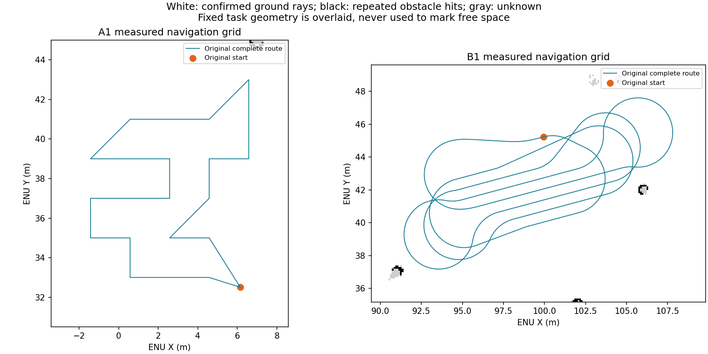

区域地图与独立配准验证
地图由带噪声的训练测点激光与 GNSS 构建；留出点不参与建图。适用范围为 A1/B1。此项通过不能代替完整簇验收。
查看测量图与版本


节点颜色来自实际 BT 状态。橙色箭头是该决策时刻最近的已记录估计位姿；不插入仿真真值。
| 行动 | 估计秒 | 可行 / 选中 |
|---|
成本是决策估计，完成量只取反馈账本。无已验证局部路径时，绕行候选不可用。
蓝：本次估计轨迹；橙：回放时刻位置；绿：最终有效覆盖；红：最终残余 / 待服务点。坐标为 map，单位米。覆盖和残余显示任务结束状态，不随滑条倒算。
地图由带噪声的训练测点激光与 GNSS 构建；留出点不参与建图。适用范围为 A1/B1。此项通过不能代替完整簇验收。

本目录还包含 commands.jsonl、source_snapshot.json、input_bindings.json 。完整定位诊断日志保留在开发机。故障案例的测试通过与 mission 的 PARTIAL 是不同字段。